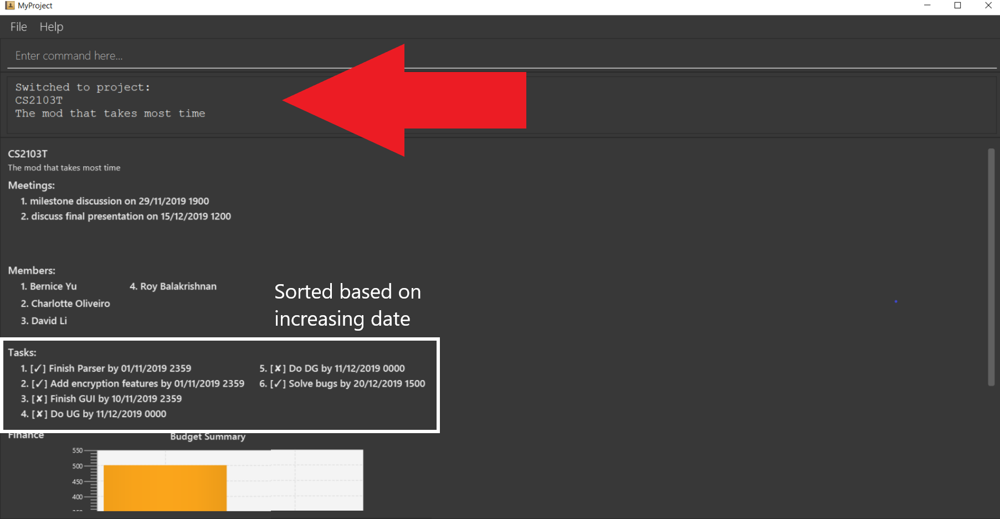
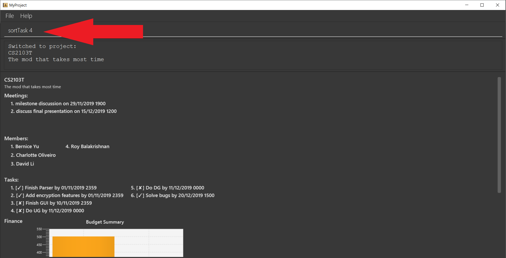

Background
My team consists of a group of 5 NUS computer science students working on this project as part of a software engineering project. The task was to enhance a basic Command Line Interface(CLI) addressbook app into an app that suits the needs of a target group of people. We decided to morph it into a project management app for students as it is more relatable and we could make changes based on our own personal needs as students which are representative of the target group. Our app, MyProject is for students, by students.
Overview
MyProject is a one stop project management app for team leaders to store and manage your multiple projects through the use of a CLI. MyProject provides a centralized platform to store, edit and display all your important information in a simple and intuitive manner. MyProject has unique functions such as sending emails to members within the app as well as financial tracking capabilities. Currently our main target group is for university students, but we intend to develop further to accommodate working adults as well in the future.
This is what MyProject looks like after you checkout to a chosen project:
My role in creating the basic project model was to implement the task feature. Every project has different tasks with different deadlines and my goal was to make storing, accessing and displaying these tasks in the most user-friendly way possible, while keeping the user interactions as simple as possible.
In addition, my enhancement to the project as a whole was implementing the sorting mechanisms for the different types of information that can be displayed such as the list of tasks and spending. This was to allow for users to choose how they want to organize their information while ensuring that the commands to sort all these information follow the same format so that it is easy for users to remember these commands.
The following sections illustrates these enhancements in more detail as well as the relevant documentation I have added to the user and developer guides.
Summary of contributions
-
Major enhancement: Added the ability to sort the different types of information according to user preferences.
-
What it does: Allows the user to choose which kind of sorting order they’d like out of a pre-specified list of sorting orders(this list is shown in the highlighted section below) for the different types of information displayed.
-
Justification: This feature improves the product significantly because the main goal of MyProject was to provide a platform to store and display all these important information in an organized and systematic manner. Giving the user such options to sort all these information helps them locate what they need easily.
-
Highlights: The type of sorting order is maintained until the app is closed. What this means is that whenever you add or edit items into the displayed list, that item will automatically be inserted into the correctly sorted position. This reduces the need for users to continuously enter the sort command whenever they add or edit the list of items.
Another noteworthy highlight is that all sort commands follow the same format. For examplesortTask 1andsortSpending 1will sort both lists by alphabetical order. Therefore users only need to remember the command for 1 sort command and the rest follows suit! -
Challenges: The main challenge of this feature was that I needed to know how the other features were implemented before I can write the code to sort them. For example, I needed to wait for the completion of the meeting feature before I could implement the sorting feature for the list of meetings displayed. This also required me to understand the internal workings of other features like how these items are stored and displayed so that I could implement the appropriate methods to sort them.
-
-
Minor enhancement: Added the tasks feature for the project model including basic commands such as adding, deleting and editing tasks.
-
Code contributed: Please click the link to see a sample of my code: [Functional code]
-
Other contributions:
-
Project management:
-
Generally in charge of issuing and assigning issues/tasks on GitHub for each milestone.
-
Created the project model on GitHub and kept track of the progresses. Project model on GitHub
-
-
Documentation:
-
Edited target user profile in DG.
-
Edited images originally from addressbook to include the new features implemented by the whole team in DG. For example, edited the storage class diagram to include all the new storage classes that were added. #52
-
-
Contributions to the User Guide
MyProject uses most of the original addressbook features, therefore most of the addressbook user guide is still intact and present in MyProject's user guide.
Given below are some sections I contributed to the User Guide, but not all. These are sections that I believe are representative of my skills. They showcase my ability to write documentation targeting end-users. |
Sorting
The following section provides a set of commands which help with sorting the information inside the application. MyProject makes it very easy and user-friendly by making all sort commands follow the same format and index/order pairing as shown below!
| The default sorting order for the lists that can be sorted is by increasing order of time(index 2). Whenever MyProject is closed, the ordering will return to the default order. |
These are the lists that can currently be sorted.
-
Tasks
-
Spending
-
Meetings
Sort tasks: sortTask [Checkout]
This command sorts the tasks in the task list of the current working project.
Format: sortTask INDEX
INDEX refers to the index of the list provided in the highlighted section above which corresponds to the type of sorting you wish to apply.
For example, index 1 corresponds to sorting by alphabetical order. For the case of sorting tasks, only numbers between 1 and 4 are applicable.
Example:
Let’s say you have added many different tasks with different deadlines and progresses into MyProject.
The default sorting order that MyProject offers is by increasing order of time(index 2). However you wish to group those tasks that are done in one group and those not done in another group and
then further sort each group by increasing order of time(index 4) to track the progress of your tasks.
Simply type in the command sortTask 4 and all the tasks in the list will immediately be sorted accordingly.
In addition, whenever you add a new task(Section 3.2.4) or edit the details of an existing task(Section 3.3.2), MyProject will automatically insert
the newly added or edited task into the correct position based on this new sorting order so you don’t have to continuously type this command whenever
you wish to add or edit tasks!
Here is a step by step process on how to do this.
-
Firstly, since this command is labeled with [Checkout] at the start, ensure that you
checkoutto a project first. Notice how the tasks in the task list are currently at the default sorting order which is by increasing order of time.
 -
Next, enter the command
sortTask 4into the command line and press enter. You can choose any index from 1-4 depending on which type of sorting order you wish to sort by based on the specifications provided in the highlighted section above.
 -
The following success message will be displayed if the input was entered correctly. Check that the type of sorting displayed in the success message is the one you actually wanted.
The tasks in the task list will then be immediately sorted accordingly as shown in the white box.

-
Now let’s say the deadline for task 2(Do UG) is pushed forward by a week and you’ve just completed it. Type in the command
editTask 2 d/ c/04/12/2019 0000(check out section 3.3.2 for more details on the editTask command) into the command line and press enter.
The task will be edited accordingly and immediately be sorted into the correct position as shown below.

Contributions to the Developer Guide
Given below are sections I contributed to the Developer Guide. They showcase my ability to write technical documentation and the technical depth of my contributions to the project. |
Task feature
Description of feature
Within every project, there are tasks to be done or milestones to be achieved within certain deadlines. The diagram below shows the class diagram of the task class and how it interacts with the model.
As shown in figure 2, each project stores multiple tasks in a list. These tasks can be stored, deleted, edited and sorted very easily. Here are some task related commands that can be executed by the app.
-
addTask - adds a task into the project model.
-
deleteTask - removes a task from the project model based on index specified by user
-
editTask - edits a task of the given index with attribute/s to edit e.g deadline/description/whether is done
-
sortTask - sorts the list of tasks based on specification given by user. (more info available in section 3.3)
Details
As seen in figure 2, each task consists of 3 parameters namely description, time and a boolean state to show whether the task is done/in progress.
A typical task will look like this on the app:
Sorting feature
Description of feature
Sorts some lists based on specifications provided by the user.
There are 3 lists that are able to be sorted so far.
-
Sort list of tasks
-
Sort list of spending
-
Sort list of meetings
The implementation is similar for these 3 methods. It makes use of SortingOrder, which is
a container class that stores the current sort order as well as methods to get and set these orders.
SortingOrder can be found in the model package.
Currently there are 5 different methods to sort the lists.
-
Alphabetical order
-
Increasing order of time
-
Whether tasks are done
-
Whether tasks are done and then by increasing order of time
-
Increasing price
| Methods 3-4 are only for sorting tasks whereas method 5 is for sort spending. Methods 1-2 can be used to sort all lists. |
Details
All sort commands take in a single integer as parameter. As mentioned in the note above, integers 1-4 are valid input for sortTask, integers 1, 2 and 5 are valid for sortSpending, and integers 1-2 are valid for sortMeeting.
An example command would be sortTask 1 which sorts the list of tasks by alphabetical order.
The following sequence diagram shows the process of obtaining a list with the new sorting order
and updating the current sort order in SortingOrder class.
These are the stages shown in figure 3. Stages are similar for sort spending as well.
-
Parses the input to obtain the index.
-
Goes to
SortingOrderto change the current sorting order to the one linked to the given index based on the specification shown above. -
Obtains list of tasks from model and sorts it. List now maintains this sorting order and displays a sorted list even after adding or editing elements.
-
Display the newly sorted task list.
The diagram below shows sortTask works. There are 2 possible error messages that can occur. Firstly,
if the user inputs an index that is not applicable to the type of items sorted. For example, sortTask 5
is invalid as index 5 is linked to a price sorting mechanism which is not applicable to sorting tasks. Secondly,
an error will be shown if the user attempts to sort the items in the same order is the current sorting order.
For example, since the default sorting order for tasks is by increasing order of date, the command sortTask 2
will be invalid if the sorting order has never been changed before. Otherwise if the input is valid,
the sorting will occur and the newly sorted task list will be displayed.
Design considerations
Aspect: Data structure to support the sort commands
-
Alternative 1 (current choice): Store the data in list.
-
Pros: Easy to implement. Easy for new Computer Science student undergraduates to understand, who are likely to be the new incoming developers of our project.
-
Cons: May have performance issues as list has to be sorted every time a new element is added or edited.
-
-
Alternative 2: Store the data in a PriorityQueue.
-
Pros: Much more efficient in terms of performance and complexity. Internal list will automatically be updated which means no additional sorting needed when adding or editing new elements.
-
Cons: Have to create and add all the tasks into another PriorityQueue if the sorting order were to be changed. Harder to implement.
-
Conclusion/Reflection
Takeaways
Shown below is the list of takeaways from this project:
-
Being new to large scale software engineering projects, I learnt how to read and understand an already established software and further develop it into a product that suits the need of a target audience.
-
I learnt how to write different types of documentations meant for different readers. For example, writing a user guide meant for users which requires step by step processes on how to use our app properly.
-
Looking back, my team and I could’ve had better planning from the start as we began to run into certain problems further down the road such as lack of features to implement due to poor planning on what kind of product we intend to create.
Challenges
A major challenge I faced was learning how to use GitHub and several other tools which were used for this project. Having no background in coding and only being exposed to coding in NUS modules such as CS2030 and CS2040, all these external tools to help with large scale programming were foreign to me and it took me a long time to get accustomed to it. However I am definitely thankful for this opportunity to be exposed to these tools which will help me in the future.
Overall this was a positive experience for me despite the slightly heavy workload as many things that I’ve learnt from this project would be essential in the future for me as a programmer and it has created a foundation for me to work on.